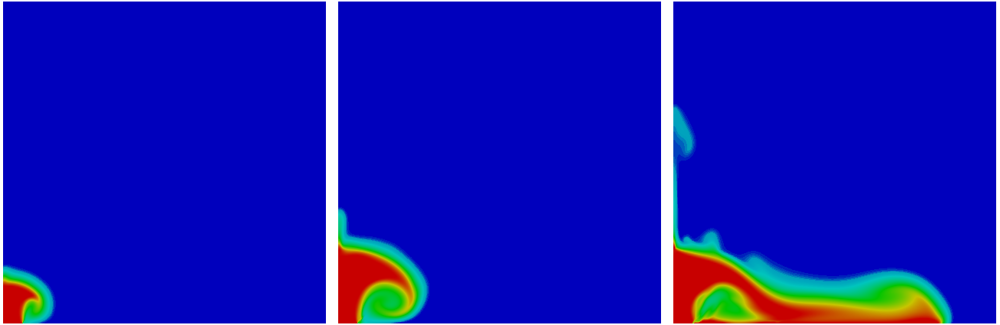

As part of my research, I have developed incompressible and compressible multiphase flow models in Fluidity --- a computational fluid dynamics package developed at Imperial College London. Fluidity features an adaptive unstructured mesh approach which provides finer resolution in areas significantly important to the dynamics being studied and coarser resolution in those areas that are not. As the flow progresses, the mesh is optimised to maintain numerical accuracy while minimising the number of superfluous nodes. Furthermore, Fluidity can run in parallel over thousands of computer processors using the Message Passing Interface (MPI), making the study of large-scale geophysical phenomena feasible in complex 3D domains.
Simulation of silicon carbide particles settling in saline water using Fluidity.
Left: particle volume fraction field, Right: adaptive unstructured mesh.
Images by Jacobs et al. (2013).
Some (mostly multiphase) applications of Fluidity are described below. Further information can be found in my PhD thesis.
Volcanic ash settling in water
Significant proportions of ash generated from explosive volcanic eruptions are found far and wide along the seabed in the form of ash layers. The study of ash particle dynamics in water is needed to better interpret these layers, which are important to geoscientists since they hold valuable information about the duration and frequency of volcanism. Early work (e.g. Fisher (1965)) assumed that ash particles settled individually at a velocity given by Stokes' law, and that layers are not significantly modified after formation. However, laboratory experiments and analysis of marine sediment cores have demonstrated the potential role of vertical density currents in transporting particles rapidly and collectively to the seabed, contradicting the assumption of individual particle settling.
Fluidity was used to simulate a laboratory experiment of tephra (fine volcanic ash particles) settling through a tank of water, performed by Carey (1997). The numerical results are shown in the video below.
At early times, when the concentration of particles was low, particles settled individually under Stokes’ law. This caused a layer of particle-rich water to form that increased in particle concentration with time. The layer eventually became unstable when the layer concentration grew large enough for particles to have an effect on each other through drag reduction and drifting, causing the particles to settle collectively as plumes as observed in the experiment. The collective transport of particles to the bottom of the tank happened at speeds several times greater than that of single particles, highlighting the important role of vertical density currents.
Similar behaviour was also seen in simulations of a laboratory-scale settling experiment by Manville & Wilson (2004) involving silicon carbide particles:
The results of this research have been published in Geophysical Journal International and the Journal of Volcanology and Geothermal Research:
C. T. Jacobs, G. S. Collins, M. D. Piggott, S. C. Kramer, C. R. G. Wilson (2013). Multiphase flow modelling of volcanic ash particle settling in water using adaptive unstructured meshes. Geophysical Journal International, 192(2):647-665. DOI: 10.1093/gji/ggs059. Free-access link.
C. T. Jacobs, T. J. Goldin, G. S. Collins, M. D. Piggott, S. C. Kramer, H. J. Melosh, C. R. G. Wilson, P. A. Allison (2015). An improved quantitative measure of the tendency for volcanic ash plumes to form in water: implications for the deposition of marine ash beds. Journal of Volcanology and Geothermal Research, 290:114-124, DOI: 10.1016/j.jvolgeores.2014.10.015. Link to author accepted manuscript.
Shock-induced fluidisation
The experiments presented by Rogue et al. (1998) and Saurel et al. (2010) provided useful data with which to validate Fluidity's compressible multiphase flow model. A shock wave was created in a vertical tube which propagated upwards towards a 2 cm-thick bed of suspended nylon particles. Pressure readings from two gauges above and below the bed were taken. As the incident shock wave hit the bed, part of it reflected back while the other part passed through, causing fluidisation. This can be seen in the video below.
Explosive volcanic eruptions
The images below show the particle volume fraction field at t = 10, 30 and 70 seconds (left to right) from a two-dimensional compressible multiphase flow simulation of an explosive volcanic eruption. Hot gas and ash particles are ejected into the atmosphere at 80 m/s. The results show the formation of an overhanging vortex as the plume ascends, followed by the collapse of the ash column which forms a thick pyroclastic density current. A convective region is also present above the ash fountain which continues to rise as a result of buoyancy effects. Once again, the simulation was performed using Fluidity. A fixed structured mesh, with a characteristic element length of 12.5 m, was used to discretise the 7 km by 7 km domain.

Simulation of an explosive volcanic eruption using Fluidity.
Left-to-right: particle volume fraction field at t = 10, 30 and 70 s.
Images by Christian Jacobs.
The results of some simulations of explosive volcanic eruptions performed with adaptive unstructured meshes have been presented in the following conference paper:
C. T. Jacobs, G. S. Collins, M. D. Piggott, S. C. Kramer (2014). Multiphase flow modelling of explosive volcanic eruptions using an adaptive unstructured mesh-based approach. In Proceedings of the jointly organized 11th World Congress on Computational Mechanics (WCCM XI), 5th European Congress on Computational Mechanics (ECCM V), and 6th European Congress on Computational Fluid Dynamics (ECFD VI), Barcelona, 20-25 July 2014. Pages 7406-7417. Handle: 10044/1/21241. Links: Paper, Full proceedings
Large eddy simulation of flow past a square
The video below presents a two-dimensional simulation involving flow past a square cylinder at a Reynolds number of 21,400, performed using Fluidity. The fluid turbulence was parameterised with the Smagorinsky large eddy simulation (LES) model.